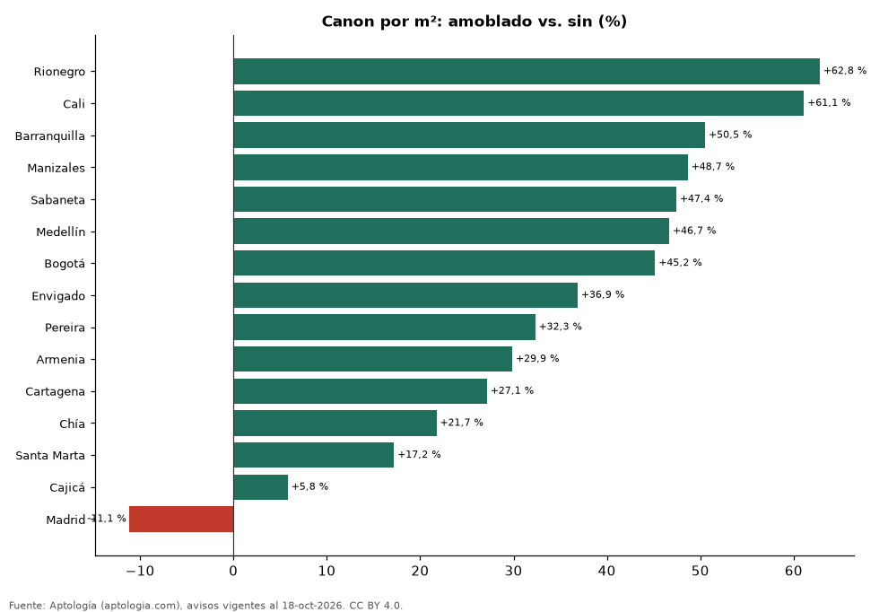

Cuánto más cuesta arrendar un apartamento amoblado en Colombia: diferencia por ciudad (octubre 2026)
Estudio con datos abiertos (CC BY 4.0). Versión original: https://github.com/elbroker/aptologia-datos/tree/main/estudios/arriendo-amoblado-vs-sin-amoblar-colombia-2026 · DOI: 10.5281/zenodo.23460752
Un apartamento en arriendo amoblado se pide en Colombia un 37,4 % más por metro cuadrado que uno comparable sin esa característica (misma ciudad y número de habitaciones). El 13,5 % de los apartamentos en arriendo lo declara. En Bogotá la diferencia es 45,2 % (16,4 % de la oferta).
Resumen: comparamos 64.543 apartamentos en arriendo con área declarada, emparejando por ciudad y habitaciones (29 celdas con 30 avisos o más en cada grupo).
Actualizado: 18 de octubre de 2026 (datos del 18 de octubre de 2026) · Próxima actualización: mensual.

Resumen
| Indicador | Valor |
|---|---|
| Diferencia por m² (emparejada) | +37,4 % |
| Parte de la oferta | 13,5 % |
| Ciudades con muestra suficiente | 15 |
| Avisos analizados | 64.543 |
Diferencia por ciudad
| Ciudad | Diferencia por m² | Con amoblado (pesos/m²) | Sin amoblado (pesos/m²) | Parte de la oferta | Avisos (con / sin) |
|---|---|---|---|---|---|
| Rionegro | +62,8 % | 60.465 | 37.143 | 6,3 % | 201 / 2.978 |
| Cali | +61,1 % | 45.644 | 28.333 | 14,1 % | 212 / 1.287 |
| Barranquilla | +50,5 % | 46.552 | 30.928 | 20,7 % | 765 / 2.929 |
| Manizales | +48,7 % | 45.027 | 30.289 | 12,1 % | 34 / 248 |
| Sabaneta | +47,4 % | 60.000 | 40.698 | 6,1 % | 237 / 3.631 |
| Medellín | +46,7 % | 68.750 | 46.875 | 15,5 % | 3.107 / 16.961 |
| Bogotá | +45,2 % | 66.176 | 45.588 | 16,4 % | 2.121 / 10.833 |
| Envigado | +36,9 % | 66.221 | 48.387 | 7,0 % | 508 / 6.795 |
| Pereira | +32,3 % | 43.000 | 32.500 | 10,0 % | 153 / 1.377 |
| Armenia | +29,9 % | 40.000 | 30.801 | 11,0 % | 37 / 300 |
| Cartagena | +27,1 % | 51.462 | 40.474 | 32,4 % | 650 / 1.358 |
| Chía | +21,7 % | 39.800 | 32.692 | 14,7 % | 72 / 417 |
| Santa Marta | +17,2 % | 48.548 | 41.422 | 43,9 % | 296 / 378 |
| Cajicá | +5,8 % | 35.714 | 33.750 | 8,8 % | 34 / 351 |
| Madrid | -11,1 % | 18.837 | 21.192 | 13,5 % | 35 / 224 |
Mediana del canon por m² con y sin la característica en cada ciudad (30 avisos o más en cada grupo). La cifra nacional promedia las diferencias dentro de cada combinación de ciudad y número de habitaciones, ponderadas por el número de avisos con la característica.
Preguntas frecuentes
¿Cuánto más cuesta arrendar un apartamento amoblado en Colombia? En la oferta de octubre de 2026, un 37,4 % más por metro cuadrado que uno comparable.
¿Qué porcentaje de los arriendos en Colombia es amoblado? El 13,5 % de los apartamentos en arriendo con el dato informado.
Metodología
- Fuente: exportes nocturnos de la base de datos de Aptología (aptologia.com) del 18 de octubre de 2026: avisos vigentes de vivienda en portales inmobiliarios de 13 países, recogidos por Aptología y vistos en línea entre el 11 y el 18 de octubre de 2026. Corte: 18 de octubre de 2026.
- Depuración: se eliminan duplicados exactos (misma ciudad, zona, tipo, precio, moneda, área, habitaciones y baños) y los precios fuera del percentil 1–99 de cada país, operación, moneda y tipo; el precio por m² usa solo avisos con área declarada entre 12 y 2.000 m² y también se recorta al P1–P99.
- Qué se mide: precios pedidos (publicados), no precios de cierre. En arriendo, el canon mensual sin administración, gastos comunes ni condominio.
- Muestra mínima: cada cifra publicada se apoya en al menos 30 avisos; las celdas con menos se omiten.
- Colombia: Precios en pesos colombianos, sin conversión de moneda. Los indicadores de amoblado, mascotas, conjunto cerrado, balcón y aviso directo del dueño solo existen en arriendo y vienen de los portales.
- Limitaciones: la cobertura depende de los portales que recorre Aptología en cada país y es mayor en las ciudades grandes y en los segmentos medio-alto y alto; el área es la que declara el aviso, sin verificar; los nombres de zona vienen de los portales.
- Privacidad: solo se publican agregados; no se publica ningún dato personal, enlace a avisos ni nombre de anunciante.
- Datos abiertos: datos.csv, licencia CC BY 4.0.
Cómo citar
Pinzón Pineda, D. M. (2026). Cuánto más cuesta arrendar un apartamento amoblado en Colombia: diferencia por ciudad (octubre 2026). Aptología (aptologia.com). https://github.com/elbroker/aptologia-datos/tree/main/estudios/arriendo-amoblado-vs-sin-amoblar-colombia-2026. Datos: datos.csv, licencia CC BY 4.0.